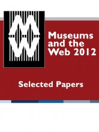

Osci Toolkit
An authoring and publishing environment for online catalogues with full scholarly apparatus
About the OSCI Toolkit Learn more about the Toolkit
Toolkit Architecture How all the pieces fit together
Documentation Build your knowledge
AIC Catalogues Learn how the AIC is using OSCI
Museums and the Web Conference paper publishing
View the Project on GitHub IMAmuseum/OSCI-Toolkit
Join the Mailing List
Sign up for the OSCI Toolkit mailing list to stay up to date on recent developments and share your experiences with your own projects.
Museums and the Web 2012: Selected Papers eBook
Working with the chairs of the Museums and the Web annual conference, a digital publication was produced for the 2012 Selected Papers proceeding print publication. The scholarly content was a perfect fit for the OSCI Toolkit. A group of volunteers entered the papers into the OSCI content management system from provided source Word documents. The resulting EPUB document was disseminated for free to all registered attendees of the conference and is available for purchase by others.
Visit the Museums and the Web 2012 Selected Papers digital publication page on the MW website for information on how to access the EPUB document.
